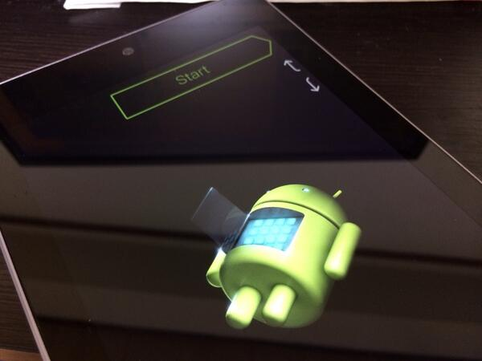

立った！ Nexus 7 が立った！
執筆日時：

iPad mini 買ったった - だるろぐ のあと、少し利用頻度が落ちていた Nexus 7 だが、確かその１カ月後ぐらいに起動不能となっていた。そのまま放置すること約一年……
それっぽいことはさんざんやったけれど、さすがに1分も押したことはなかった気がしたので、半信半疑で試してみたところ。立った！ Nexus 7 が立った！ 我が Nexus 7 が雄々しくも立ち上がったではないか！！
ちなみに、このリカバリーモード（？）は音量ボタンで上下、電源ボタンで決定しながら操作するようだ。OS もさっそくAndroid 4.2（！？）から Android 4.4 へとバージョンアップしてみた。すでに Surface 2 も iPad mimi もあるのであまり活躍の機会はなさそうだけど、我が家唯一の Android 端末としていろいろテストなどに役立ってもらおうかと思う。
起動不能になった Nexus 7 を文鎮代わりに使っている人は少なくないみたいなので、もしよろしければお試しください。